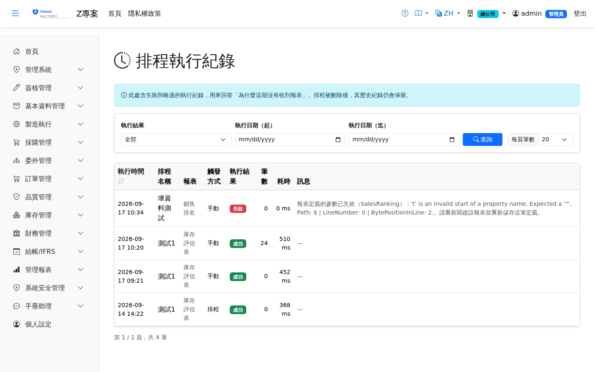

排程執行紀錄Schedule Run History
路由：/ReportRunHistory | 每一次排程執行的結果與原因Route: /ReportRunHistory | The result and reason for every schedule run
每一次排程執行都會留下紀錄，包含失敗與因權限不足而略過的那些。這個畫面存在的理由就是回答「為什麼這期沒有收到報表」——收件匣只給得到成功的結果，答不了這個問題。Every schedule run is recorded, including the ones that failed or were skipped for lack of permission. This screen exists to answer the question "why was no report delivered this period" — the inbox only shows successful runs and cannot answer it.

排程執行紀錄畫面截圖（示意，實際欄位/資料依權限與查詢條件而異）Schedule run history screenshot (illustrative; actual fields and data vary by permission and query criteria)
操作步驟How to use it
1
選擇執行結果（成功／失敗／權限不足略過）與執行日期區間，按「查詢」。要找出問題時，先選「失敗」。Pick a result (success, failed, or skipped for lack of permission) and a run-date range, then click Search. When chasing a problem, start with Failed.
2
看「訊息」欄的原因。權限不足略過代表擁有者對該報表的權限已被取消，該排程同時會被自動停用，請到「報表排程」確認並重新指派擁有者。Read the reason in the Message column. "Skipped for lack of permission" means the owner's access to that report was revoked; the schedule is disabled at the same time, so check it on the Report Schedules screen and reassign the owner.
3
「筆數」為 0 且結果為成功，代表報表有跑出來但該期間沒有資料——這通常是資料面的問題，不是排程的問題。A successful run with 0 rows means the report ran but there was no data for that period — usually a data issue rather than a scheduling one.
注意事項Points to note
執行紀錄是稽核軌跡，排程被刪除後紀錄仍然保留，此時「排程名稱」會顯示為已刪除。紀錄本身不含報表數字，要取得檔案請到收件匣。The run history is an audit trail: records survive the deletion of the schedule itself, and the schedule name then shows as deleted. The history holds no report figures — go to the inbox for the files.
欄位說明Field reference
查詢條件Query criteria
| 條件Condition | 說明Guide |
|---|---|
| 執行結果Result | 成功／失敗／權限不足略過；留空為全部Success, failed or skipped for lack of permission; blank means all |
| 執行日期（起）Run Date From | 只看該日期之後的執行Only runs on or after this date |
| 執行日期（迄）Run Date To | 只看該日期之前的執行Only runs on or before this date |
清單欄位List fields
| 欄位Field | 說明Guide |
|---|---|
| 執行時間Run Time | 本次執行的時刻，以廠別時區顯示（與其他畫面一致）When this run happened, shown in the plant time zone (the same as every other screen) |
| 排程名稱Schedule Name | 對應的排程；排程已刪除時顯示為已刪除The schedule involved; shows as deleted once the schedule is gone |
| 報表Report | 報表種類Which report it is |
| 觸發方式Trigger | 排程自動觸發、人工立即執行、或由自然語言提問觸發Triggered by the schedule, by a manual run, or by a natural-language question |
| 執行結果Result | 成功、失敗、或權限不足略過Success, failed, or skipped for lack of permission |
| 筆數Rows | 產出的資料列數Number of data rows produced |
| 耗時Duration | 本次執行花費的毫秒數；持續變長代表資料量成長或查詢變慢How many milliseconds the run took; a steady rise means growing data or a slowing query |
| 訊息Message | 失敗或略過的原因Why it failed or was skipped |